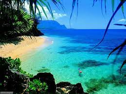

I Caraibi sono una vasta regione geografica delle Americhe che comprende tutti i paesi bagnati dal Mare Caraibico, cioè tutte le isole delle Antille e i litorali di alcuni paesi continentali del centro e sud America che si affacciano su di questo mare. L'area caraibica è costituita dalle numerose isole che separano il Golfo del Messico dal mar dei Caraibi e quest'ultimo dall'Oceano Atlantico.
Le isole dei Caraibi si differenziano molto quando si parla di paesaggi, infatti in questa spendida località si possono trovare sia spiagge molto vaste, che incantano combinandosi perfettamente con l'acqua cristallina, rendendo così il panorama da cartolina, a piccoli golfi o laghetti situati nell'entroterra delle isole, raggiungibili seguendo i numerosi sentieri che ormai popolano le foreste.
